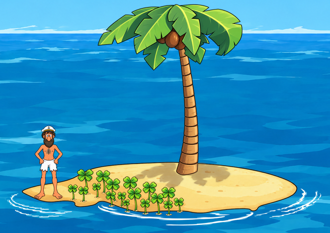
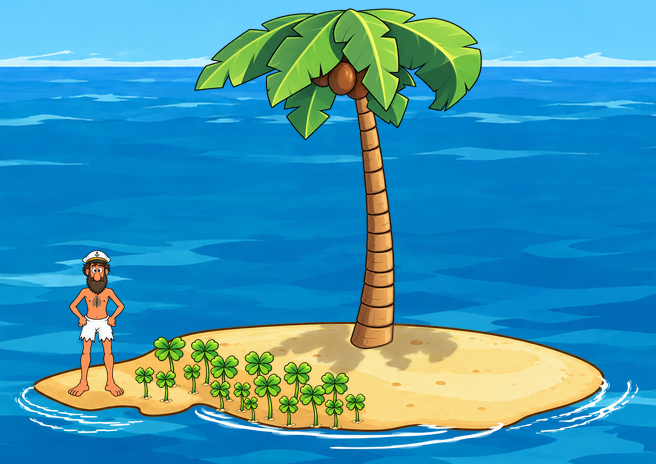

Shoreline enlargement draft
Both sides use the decorations at their original size and placement. The right adds sand to the shoreline. Judge whether the ground feels continuous and supports the full-size decorations.
Earlier shoreline, full-size props

Enlargement draft, full-size props

This preview shows one actual captured wave pose. The full wave cycle and Johnny's ground contact still need review before production. No production artwork has changed.